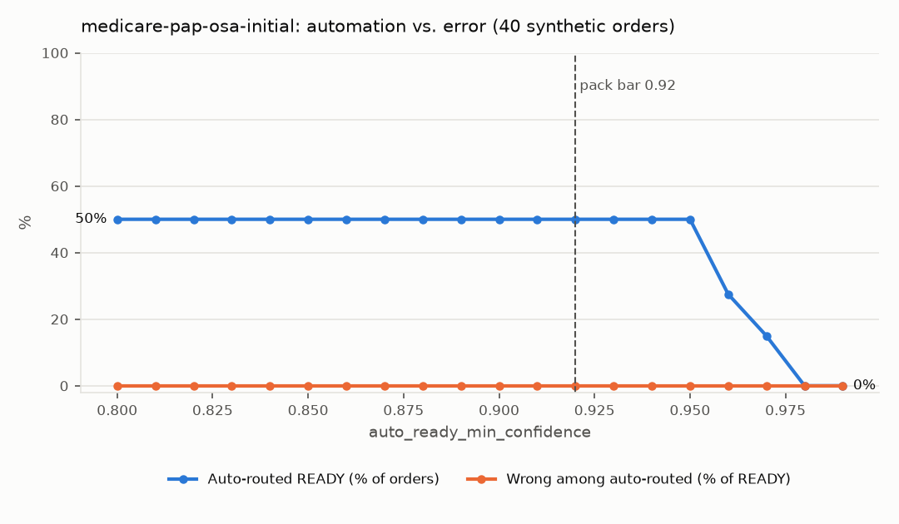

A configurable qualification engine for DME orders. Built for a fictional customer, Cascade Sleep & Respiratory. All data synthetic.
fax ─► PDF ─┬─► local OCR ──┐
│ ├─► fields + confidence ─► rules ─► route ─► review queue
└─► Claude ─────┘ two readers; disagreement goes to a person
│
deterministic rules first ─────┼─ NPI Registry (live) · Stedi eligibility · X12 271
model checks last, and only ───┘ with a verbatim quote from the packet
“Group II: PO2 56–59 mm Hg or SpO2 89%, plus edema suggesting CHF, pulmonary hypertension or cor pulmonale” is twelve lines of YAML, each rule citing its source.

Synthetic data written by the same author as the engine: proof the pipeline works, not a real-world accuracy claim. Phase 0 measures that.
| Input | Value |
|---|---|
| Hands-on minutes per order today | 18 (assumed) |
| Share auto-routed Ready | 50% (measured, synthetic) |
| Spot check / flagged-order review | 1.5 / 6 min (assumed) |
| Minutes per order after | 3.8 |
| Hours freed per month | 356 at 1,500 orders |
| Model cost | $0.068 per order, about $101 a month |
| Phase | What changes | Exit criteria |
|---|---|---|
| 0. Shadow, 4 weeks | Engine routes every order; humans decide as today | ≥ 95% defect recall on their labeled orders; zero defective orders it would call Ready |
| 1. Auto-route Ready | Orders above the bar skip full review; 10% spot check | Spot-check error < 1% |
| 2. Outreach drafts | Needs-info orders get a drafted, cited fax | ≥ 80% sent without edits |
| 3. More packs | Home oxygen, then continued-coverage PAP | Each pack passes its own eval before go-live |